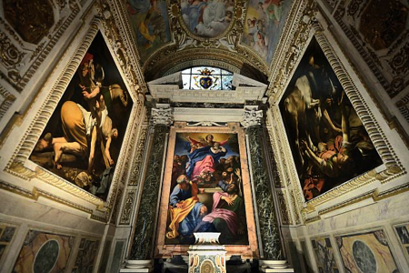

Foto 3: Basilica di Santa Maria del Popolo
Foto 3: Basilica di Santa Maria del Popolo
L'obiettivo di questa guida è permetterti di visitare il centro storico di Roma in 1 giorno riuscendo a vedere, con molta calma, il maggior numero di attrazioni possibili.
L'itinerario prevede la visita dei seguenti luoghi nel seguente ordine: Piazza del Popolo, via del Corso, via Condotti, Piazza di Spagna, Fontana di Trevi, Piazza Montecitorio, Pantheon, Piazza Navona, Campo dei Fiori. L'itinerario è lungo circa 4 Km è può essere percorso interamente a piedi.
La scelta del punto iniziale del nostro itinerario è fondamentale, sbagliare questa scelta potrebbe significare passare più volte dallo stesso punto e sprecare inutili energie. A mio avviso Piazza del Popolo è il punto ideale per iniziare quest'itinerario.
Foto 1: Porta Flaminia
L'ingresso a Piazza del Popolo è attraverso la Porta del Popolo detta anche Porta Flaminia (Foto 1). Questo sarà l'ingresso del vostro itinerario. Il suo aspetto attuale, ben diverso da quello originario, è frutto di una ricostruzione cinquecentesca. La facciata esterna fu commissionata da papa Pio IV a Michelangelo che, però, trasferì l’incarico a Nanni di Baccio Bigio, il quale realizzò l’opera tra il 1562 e il 1565 ispirandosi all’Arco di Tito. Le quattro colonne che decorano la facciata provengono dall’antica basilica di San Pietro. Nel 1638, in prossimità dell’apertura della porta, vennero inserite le due statue di San Pietro e San Paolo, realizzate da Francesco Mochi. La facciata interna fu invece realizzata da Gian Lorenzo Bernini per Papa Alessandro VII e venne eseguita in occasione dell’arrivo a Roma, il 23 dicembre 1655, della regina Cristina di Svezia, a seguito della sua conversione al Cristianesimo, come ricorda anche l’epigrafe posta sotto lo stemma dei Chigi.
Foto 2: Piazza del Popolo vista dall'alto
La Foto 2 mostra la vista dall'alto di Piazza del Popolo con delle frecce che indicano i punti salienti che, a mio avviso, dovente conoscere.
Attraversando la Porta Flaminia (A) vi troverete in un breve ingresso alla cui sinistra c'è la Basilica di Santa Maria del Popolo (B). Percorrendo questo breve ingresso arriverete nella Piazza. Quest'ultima ha la forma di un elisse con l'Obelisco Flaminio (C) al centro. Questi è alto 24 metri, costruito ai tempi dei faraoni Ramesse II e Merenptah (1232-1220 a.C.), portato a Roma sotto Augusto e precedentemente collocato al Circo Massimo.
Subito alla vostra sinistra c'è il Museo Leonardo da Vinci (L) in cui potrete ammirare la riproduzione delle splendide macchine di Leonardo da Vinci.
Vicino al Museo Leonardo da Vinci c'è una rampa di scale che porta alla Terrazza del Pincio (D). Sotto al Terrazzo c'è la Fontana della Dea Roma. Se non volete spendere tempo e soldi nel museo vi consiglio di avvicinarvi all'ingresso dove troverete esposta e visibile gratuitamente quella che, secondo me, è la macchina più ingegnosa di Leonardo da Vinci: il Ponte Salvatico.
Dal lato opposto al terrazzo del Pincio c'è la Fontana del Nettuno (I).
Posizionandovi vicino all'obelisco con alle spalle la Porta Flaminia vedrete di fronte a voi le cosiddette chiese gemelle di Santa Maria in Montesano e Santa Maria dei Miracoli (E) ai cui lati troviamo tre delle strade principali del centro storico: via del Babuino (G), via del Corso (F) e via di Ripetta (H).
Subito dopo l'ingresso alla Piazza attraverso la Porta Flaminia troverete a sinistra un vero gioiello artistico Rinascimentale: la Basilica di Santa Maria del Popolo. E’ una chiesa ricca di storia e di capolavori.
Foto 3: Basilica di Santa Maria del Popolo
Fu papa Pasquale II nel 1099 ad iniziare la costruzione di una cappella là dove ora sorge Santa Maria del Popolo per celebrare la liberazione del Santo Sepolcro a opera dei crociati.
La Basilica ha la classica forma a croce latina con l'interno diviso in tre navate (una centrale e due laterali), un transetto, una cupola e il presbiterio. Nelle due navati laterali troviamo 4 cappelle per ciascun lato. Il transetto ospita altre quattro Cappelle, due sul lato sinistro e due sul lato destro. Al centro del transetto, in alto, troviamo la cupola e frontalmente l'altare maggiore dove c'è l'immagine della Madonna del Popolo. Dietro all'altare c'è un profondo presbiterio con a fianco la Sacrestia.
Foto 4: Pianta Santa Maria del Popolo
Tra le cappelle più note troviamo la Cappella Cerasi collocata nel transetto (posizione 4 nella Pianta in Foto 4) e la Cappella Chigi collocata nella navata di sinistra (posizione 13 nella Pianta in Foto 4).
La Cappella Cerasi (4 in Foto 4) fu acquistata da monsignor Tiberio Cerasi, Tesoriere Generale della Camera Apostolica sotto il pontificato di Clemente VIII, acquistò la cappella per farne il luogo di sepoltura di famiglia. Per la realizzazione della nuova cappella chiamò tre grandissimi artisti: Carlo Maderno per la parte architettonica, Annibale Carracci e Michelangelo da Merisi da Caravaggio per la decorazione pittorica. Carracci eseguì la pala d’altare, l’Assunzione della Vergine, e Caravaggio i due laterali: la Crocifissione di S.Pietro e la Conversione di S.Paolo.
 Foto 5: Cappella Cerasi
La Cappella Cerasi fu acquistata da monsignor Tiberio Cerasi, Tesoriere Generale della Camera Apostolica sotto il pontificato di Clemente VIII, acquistò la cappella per farne il luogo di sepoltura di famiglia. Per la realizzazione della nuova cappella chiamò tre grandissimi artisti: Carlo Maderno per la parte architettonica, Annibale Carracci e Michelangelo da Merisi da Caravaggio per la decorazione pittorica. Carracci eseguì la pala d’altare, l’Assunzione della Vergine, e Caravaggio i due laterali: la Crocifissione di S.Pietro e la Conversione di S.Paolo.
Foto 6: Cappella Chigi
La Cappella Chigi è la seconda cappella della navata sinistra nella basilica di Santa Maria del Popolo a Roma. Venne disegnata da Raffaello Sanzio per il banchiere senese Agostino Chigi che commissionò l'opera. Al centro della Cappella, sull'altare, troviamo la bellissima Nascita della Vergine di Sebastiano del Piombo e Salviati. Completano la pregevole decorazione la sculture Giona ed Elia di Lorenzetto a sinistra e la scultura Daniele, il leone, Abuc e l'Angelo del Bernini, che mise mano anche all’architettura della cappella per il futuro Papa Alessandro VII. In alto la cappella è chiusa da una cupola decorata a cassettoni dorati e mosaici con Dio Padre circondato dalle allegorie del Sole e gli altri pianeti. Gli affreschi tra le finestre con Storie della genesi e i pennacchi con le Stagioni di Salviati.
Foto 7: Cupola della Cappella Chigi
Viene raccontato che chi riesce a scalare questa torre altissima può ottenere una grande forza. Goku scala l' altissima torre e in cima trova il Maestro Karin che lo allena, inoltre Goku scopre che lì cresce una pianta magica i cui frutti sono dei fagioli magici chiamati Senzu, uno solo dei quali può saziarti per molti giorni oppure (e sarà molto importante nella storia) può guarire istantaneamente anche dalle ferite mortali. Così Goku riesce a sconfiggere Taobaibai. Goku vuole raccogliere tutte e 7 le sfere del drago per resuscitare Bora. Per farlo irrompe nella fortezza del Red Ribbon e sconfigge tutto l' esercito.
Alla fine manca ancora una sfera che il radar non riesce a segnalare, perciò Goku va coi suoi amici dalla Sibilla, un' indovina sorella del Genio delle Tartarughe di Mare. Per i suoi servigi chiede un'immensa quantità di denaro oppure di sconfiggere i suoi guerrieri che vengono direttamente dall' aldilà. Goku ed i suoi amici sconfiggono tutti i guerrieri, l' ultimo combattimento è tra Goku e Gohan che durante lo scontro aveva una maschera. Gohan è effettivamente morto, ma è potuto tornare nel mondo dei vivi per un giorno grazie ai poteri della Sibilla. L' ultima sfera non veniva segnalata dal radar perché era in un contenitore speciale in mano di Pilaf. Goku sconfigge facilmente Pilaf ed i suoi scagnozzi e il desiderio di resuscitare Bora viene esaudito dal drago Shenron.
Goku si allena ancora e poi partecipa coi suoi amici ad un nuovo torneo Tenkaichi. Vi partecipano anche Tenshinhan e Jaozi, allievi del perfido Eremita della Gru, il quale era insieme al Genio delle Tartarughe di Mare allievo dello stesso maestro Mutaito. Anche Tenshinhan e Jaozi hanno una forza sovrumana e danno parecchio filo da torcere a Goku e i suoi amici, inoltre sono arrabbiati perché Taobaibai, ucciso da Goku, era fratello dell' Eremita della Gru. Alla fine però si ravvedono diventando buoni e abbandonano il proprio maestro. Nel torneo l' ultimo combattimento è tra Goku e Tenshinhan, la loro forza è praticamente pari e vince Tenshinhan per un soffio.
Dopo il torneo Crilin viene ucciso da un mostro, più avanti vengono uccisi anche molti altri partecipanti del Tenkaichi. Goku parte allo sbaraglio per trovare l'assassino, ma il Genio delle Tartarughe di Mare capisce che si trovano di fronte ad un nemico terribile, il Grande Mago Piccolo (si chiama Piccolo anche in giapponese, è un gioco di parole in italiano), un demone.
Quello che ha ucciso Cirilin era un suo servitore. Il Genio delle Tartarughe di Mare aveva combattuto contro di lui insieme al maestro Mutaito vari secoli prima (ha bevuto una pozione che gli impedisce di morire di vecchiaia) ed effettivamente non lo avevano battuto colla forza: avevano usato una tecnica speciale, l' onda dell' arginamento demoniaco per rinchiuderlo in un contenitore. Questo contenitore è stato aperto da Pilaf affinché il Grande Mago Piccolo conquistasse il mondo e gliene lasciasse una piccola parte come ringraziamento (invece poi non gli darà niente. Goku viene sconfitto, ma non ucciso dall' assassino di Crili.
Incontra Yajirobei, un ragazzo forte quasi quanto lui che riesce senza tanta difficoltà ad uccidere un' altro servitore del Grande Mago Piccolo, venuto per prendergli una sfera del drago segnalata dal radar cercasfere di Pilaf. Gli altri pensano che Goku sia morto. Il Genio delle Tartarughe di Mare ha appreso l' onda dell' arginamento demoniaco dal maestro Mutaito, il problema di questa tecnica è che chi la esegue muore. Il Genio delle Tartarughe di Mare insieme a Tenshinhan e Jaozi ha raccolto le sfere del drago in giro per il mondo tranne quelle in possesso del Grande Mago Piccolo e lo ha sfidato apertamente. Tenta la tecnica dell' arginamento demoniaco, ma commete un errore e comunque muore.
Il Grande Mago Piccolo ha ora tutte le sfere del drago ed evoca Shenron per chiedergli l' eterna giovinezza, Jaozi vuole interromperlo chiedendo al drago di uccidere il Grande Mago Piccolo, ma questo lo uccide con un colpo di energia prima che possa fare la sua richiesta. Il Grande Mago Piccolo diventa giovane e quindi ancora più potente, in un colpo uccide Shenron in modo che nessuno possa chiedergli di ucciderlo.
Goku torna alla Torre di Karin e il maestro Karin gli dà l' acqua del dio maestoso, un veleno che se gli si sopravvive rende più forti. Goku riesce a sopravvivere. Il Grande Mago Piccolo va al palazzo reale (del re del mondo) e con la forza si impone re del mondo. Tenshinhan va a sfidarlo, ma non c'è niente da fare. Interviene Goku che dopo un lungo combattimento riesce ad uccidere il Grande Mago Piccolo, questo in punto di morte espelle un uovo dal quale nasce poi un figlio che è in realtà la sua reincarnazione, si farà chiamare Piccolo.
Goku torna da Karin e questi gli spiega che per resuscitare Crili, il Genio delle Tartarughe di Mare e Jaozi potrebbe andare dal creatore delle sfere del drago: Dio (Kami). Dalla cima della Torre di Karin usando il suo bastone allungabile Goku giunge al palazzo di Dio. Dio ridà vita al drago Shenron e gli amici di Goku resuscitano tutti quelli uccisi dal Grande Mago Piccolo con le sfere del drago. Dio gli spiega che gli dei non sono eterni, ma quando uno muore di vecchiaia gli succede un altro. Egli stesso era venuto molto tempo fa dal dio precedente chiedendo di succedergli, ma per farlo doveva espellere la sua parte malvagia, perciò si è separato in 2 esseri: il Grande Mago Piccolo e quello che ora è Dio. Essendo un unico essere, se uno dei 2 muore, muore anche l' altro. Dio è ancora vivo perché il Grande Mago Piccolo si è reincarnato in Piccolo. Goku viene allenato per 3 anni al palazzo di Dio da Mr. Popo, l' aiutante di Dio, più forte del Grande Mago Piccolo.
Dopo questi 3 anni partecipa al torneo Tenkaichi dove arrivano in finale anche Chichi (che non rivela il suo nome), Piccolo, Dio con in prestito un corpo umano per non farsi riconoscere (il suo aspetto è identico a quello del Gande Mago Piccolo da vecchio), Taobaibai trasformato in cyborg (è sopravvissuto facendosi trasformare in cyborg) e gli amici di Goku i quali in questi anni hanno scalato la Torre di Karin e saputo dei Senzu. Chichi è arrabbiata con Goku perché tanti anni prima le aveva promesso di sposarla senza sapere cosa significasse (c'è stato un equivoco), dopo essersi sfogata (comunque perde contro Goku) decidono di sposarsi. In un combattimento combattono Piccolo e Dio cammuffato da umano, Dio tenta la tecnica dell' arginamento demoniaco (che non lo uccide perché molto potente), ma Piccolo riesce a rispedirla indietro imprigionando Dio (per i giudici di gara l' umano che ospitava Dio è svenuto e quindi ha perso).
Nell' ultimo combattimento si affrontano Goku e Piccolo. È un combattimento incredibile all' interno del quale Goku riesce a liberare Dio e Piccolo mostra delle incredibili capacità, può allungare le braccia, rigenerare le parti mancanti e diventare gigante, alla fine Goku vince per un pelo. Goku mangia un Senzu per riprendersi e ne dà uno anche a Piccolo (nello stupore di tutti) perché non vuole ucciderlo perché non muoia Dio e per avere sempre un degno avversario da affrontare. Per il momento Piccolo se ne va via. Dio offre a Goku di diventare il nuovo dio, ma non accetta e se ne va con Chichi.